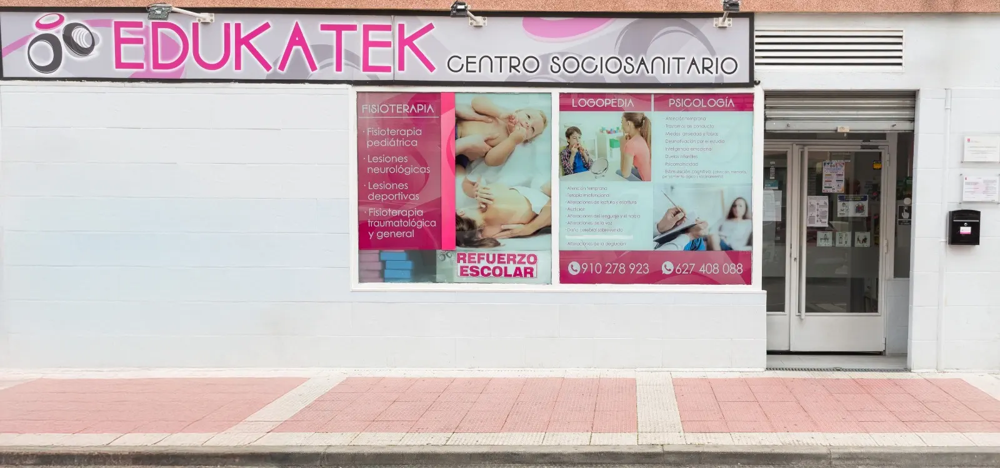
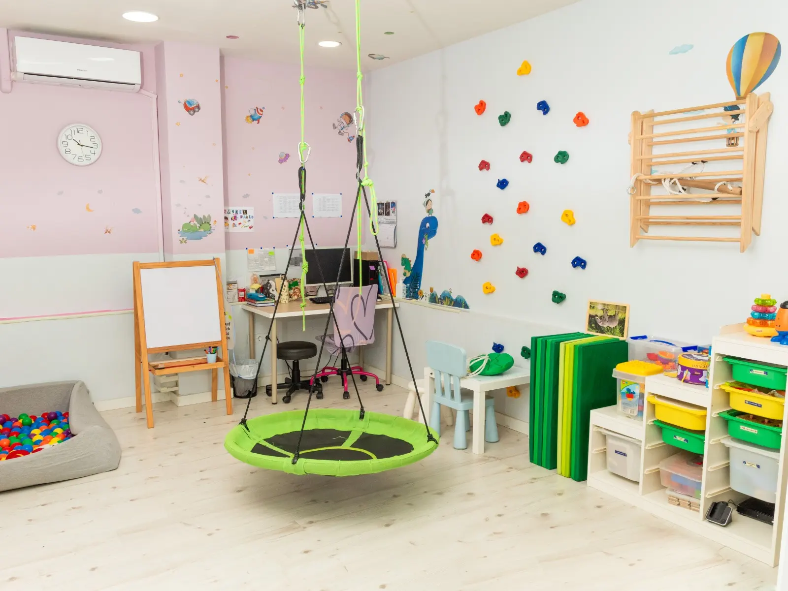

Logopedia · Psicología · Fisioterapia
Centro Sociosanitario Ciudad Real
Calle de Ciudad Real, 6, 28980 Parla, Madrid
Ver centroDos centros sociosanitarios especializados en Parla para acompañar el desarrollo, la comunicación, el aprendizaje y el bienestar emocional de niños, adolescentes y familias.
Descubre másEDUKATEK cuenta con dos centros en Parla con atención cercana, profesional y personalizada según las necesidades de cada familia.

Logopedia · Psicología · Fisioterapia
Calle de Ciudad Real, 6, 28980 Parla, Madrid
Ver centroLogopedia · Psicología · Apoyo escolar
C. de Cuenca, 36, 28982 Parla, Madrid
Ver centroAcompañamos cada caso de forma cercana, realista y coordinada, con intervención adaptada a la edad, necesidades y objetivos de cada persona.
Diseñamos cada intervención según el perfil, el momento evolutivo y los objetivos familiares o escolares.
Contamos con profesionales de logopedia, psicología, atención temprana y apoyo educativo.
Orientamos y acompañamos a las familias durante todo el proceso terapéutico.
Creamos un espacio seguro, amable y de confianza para niños, adolescentes y familias.
Orientamos a familias sobre recursos, prestaciones y ayudas relacionadas con atención temprana, discapacidad, dependencia y becas educativas.

Te ayudamos a entender la documentación, pasos y recursos disponibles para familias con necesidades de apoyo.
Ver ayudasInformación y acompañamiento sobre cheque servicio, ayudas disponibles, documentación y recursos para familias con necesidades de apoyo.
Orientación en becas ACNEAE, reconocimiento de discapacidad, dependencia, prestación por hijo a cargo y solicitud de plaza pública de atención tempran
Orientación e intervención para menores con necesidades de apoyo en su desarrollo, coordinando logopedia, psicología, fisioterapia y terapia ocupacion
Trabajamos de forma cercana con niños, adolescentes y familias para mejorar comunicación, aprendizaje, conducta, autonomía y bienestar emocional.
Pedir informaciónValoración excelente basada en la confianza de nuestras familias.
“Trato cercano, orientación clara y un equipo muy implicado con el desarrollo de mi hija.”
Sonia Molinero“Atención muy personalizada, amable y profesional. Nos explicaron cada paso con mucha claridad.”
Sandra F.“Profesionales responsables y comprometidas. Un centro muy recomendable para familias.”
Patricia Y.Recursos útiles para familias sobre comunicación, aprendizaje, atención temprana y bienestar emocional.

Una guía clara para familias que observan retrasos en lenguaje, pronunciación, comprensión o lectoescritura.
Leer más
Qué trabaja la atención temprana, cuándo valorarla y cómo puede coordinar terapias y familia.
Leer más
Cómo detectar señales emocionales y cuándo una intervención psicológica puede aportar seguridad a la familia.
Leer másContamos con dos centros adaptados a diferentes necesidades educativas y sociosanitarias.
Calle de Ciudad Real, 6, 28980 Parla, Madrid
C. de Cuenca, 36, 28982 Parla, Madrid
Contacta con EDUKATEK para resolver dudas, pedir información o solicitar una primera orientación.
Trabajamos con infancia, adolescencia y familias. En función del caso se puede intervenir en logopedia, psicología, apoyo escolar, fisioterapia, terapia ocupacional o integración sensorial.
Si buscas atención temprana, fisioterapia, terapia ocupacional o integración sensorial, normalmente te orientaremos hacia Calle Ciudad Real. Para apoyo escolar e inglés, el centro de Calle Cuenca suele ser la opción más adecuada.
Sí. Ofrecemos orientación sobre recursos, documentación y ayudas relacionadas con atención temprana, discapacidad, dependencia, becas ACNEAE y otras prestaciones familiares.